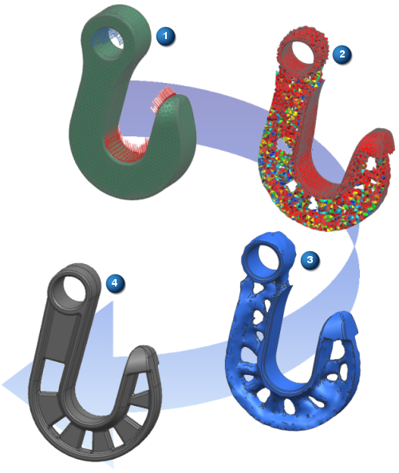

NX 拓扑优化通过为您提供最佳设计建议来帮助您设计新的组件。软件基于从高级仿真有限单元模型得到的分析结果和在 NX Nastran 中求解的解算方案载荷工况生成此建议。NX 拓扑优化使用 FE DESIGN 公司的 Tosca 拓扑优化求解器。
要建立拓扑优化，需定义以下对象：
设计区域，指定模型中可修改优化的单元
设计目标，例如刚度最大化
可以定义设计约束(如体积)以及制造约束以确保可以产生组件。在这些限定中工作时，优化通过调整设计区域内单元的材料密度来确定最佳材料分布。
产生模型的材料分布呈块状。然后软件创建过渡使模型变得平滑，从而使材料的分布更加连续。可以将此平滑后的模型导入到 NX 建模中以用作创建新组件的起始点。
|

|